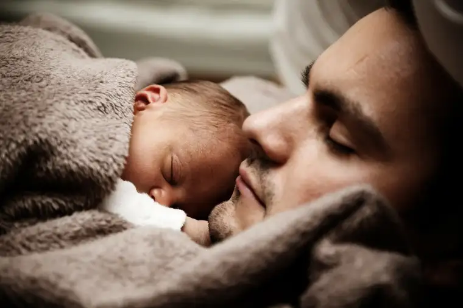

Recently, I sat in on a discussion on the sacrament of Reconciliation with a group of teenagers.
At one point, I locked in on a certain young lady with an expressive face. As the priest explained more about the sacrament, her eyes became big, as questions formed. You could see her mind churning through his presentation.
Finally, an opportunity for questions came, and she raised her hand, asking what many through the ages have, I’m sure, wondered along the journey toward Reconciliation.
“What will it really be like inside the confessional? Will the priest know who I am? Will he remember my sins later? I’m scared.”
The priest did well in allaying her fears, but as he talked, I had some thoughts of my own tossing about regarding two basic ways we tend to approach this sacrament: reconciliation as either a movement of judgment, or a movement of mercy. Over time, I’ve come to conclude that God’s approach, at least, tends more toward the mercy end of things.
But I think most of us are prone to think more about the judgment aspect. Our own sins convict in and of themselves. The thought of saying them out loud can be quite unsettling. But in focusing on that, and God’s disapproving look, we miss the main reason for Reconciliation. The sacrament doesn’t exist to shame us, or hold our sins over us, but to free us from them; to unbind that which keeps us bound so that we can live, and love, more freely.
My friend Ramona Trevino, whose story I helped tell through her memoir, “Redeemed by Grace: A Catholic Woman’s Journey to Planned Parenthood and Back,” talked with me quite a bit about the significance of Reconciliation in her conversion back to her Catholic roots, especially regarding her first Confession after recognizing that her work was in serious conflict with her Catholic faith. Although she initially was filled with trepidation in approaching the priest in Confession like so many of us, in the end she found the experience transforming. Rather than finding a judging tyrant in the Confessional booth, the experience allowed her to feel as if she were nestling into the arms of her Father.

And though, yes, God is just (“…because of your just punishment…”), his main motive surrounds a desire to draw us to him, not push us away. Offering renewal with him through Reconciliation connects more to his desire to bring mercy. God wants us to approach him not with undue shame, but contrite hearts, in order that we might live a fuller, more abundant life. Sin weighs us down; he’s ready to relieve us of all that.
He wants us to receive us in mercy, and help bring us back into the light.
If we look at Reconciliation from the perspective of mercy — which is the way I fully believe God does — it makes all the difference, and helps us approach this beautiful sacrament not in fear and trembling, but in hopeful expectation of what might be possible once we’ve laid down our missteps.
And remember, God already knows what we’ve done wrong, so nothing we say will be new to him. He just wants us to say it so he can nudge us beyond it.
What an incredible gift, and one highlighted at this time of Lent. With this in mind, let us not walk, but run, into the Confessional, ready to be held by God, and released with more hope than ever.
Q4U: What are your ideas about Reconciliation? Might this Lent be a good time to consider a new, more hopeful approach?